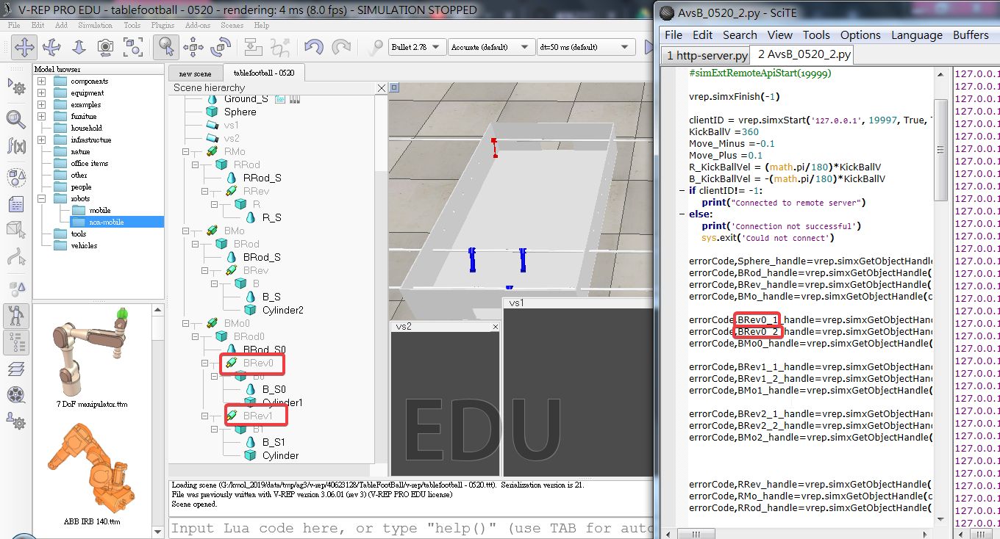

觀看組員所修改的程式，並加以理解，也發現錯誤導致其中一根球桿無法轉動，但可以移動。已提醒組員程式有誤。

下方程式.py
import vrep
import keyboard
from time import sleep
import sys, math
# child threaded script:
# 內建使用 port 19997 若要加入其他 port, 在 serve 端程式納入
#simExtRemoteApiStart(19999)
vrep.simxFinish(-1)
clientID = vrep.simxStart('127.0.0.1', 19997, True, True, 5000, 5)#clientID解釋: client客戶 ID為辨別身分的證明
KickBallV =360 #故定義踢球速度、移動速度與轉動角度
Move_Minus =-0.1
Move_Plus =0.1
R_KickBallVel = (math.pi/180)*KickBallV
B_KickBallVel = -(math.pi/180)*KickBallV
if clientID!= -1:#當clientID= -１
print("Connected to remote server")
else:
print('Connection not successful')
sys.exit('Could not connect')
errorCode,Sphere_handle=vrep.simxGetObjectHandle(clientID,'Sphere',vrep.simx_opmode_oneshot_wait)#指定各物件對應到在V-rep的參數
errorCode,BRod_handle=vrep.simxGetObjectHandle(clientID,'BRod',vrep.simx_opmode_oneshot_wait)#定義errorCode
errorCode,BRev_handle=vrep.simxGetObjectHandle(clientID,'BRev',vrep.simx_opmode_oneshot_wait)
errorCode,BMo_handle=vrep.simxGetObjectHandle(clientID,'BMo',vrep.simx_opmode_oneshot_wait)
errorCode,BRev1_handle=vrep.simxGetObjectHandle(clientID,'BRev1',vrep.simx_opmode_oneshot_wait)
errorCode,BRev0_handle=vrep.simxGetObjectHandle(clientID,'BRev0',vrep.simx_opmode_oneshot_wait)
errorCode,BMo0_handle=vrep.simxGetObjectHandle(clientID,'BMo0',vrep.simx_opmode_oneshot_wait)
errorCode,BRev1_1_handle=vrep.simxGetObjectHandle(clientID,'BRev1_1',vrep.simx_opmode_oneshot_wait)
errorCode,BRev1_2_handle=vrep.simxGetObjectHandle(clientID,'BRev1_2',vrep.simx_opmode_oneshot_wait)
errorCode,BMo1_handle=vrep.simxGetObjectHandle(clientID,'BMo1',vrep.simx_opmode_oneshot_wait)
errorCode,BRev2_1_handle=vrep.simxGetObjectHandle(clientID,'BRev2_1',vrep.simx_opmode_oneshot_wait)
errorCode,BRev2_2_handle=vrep.simxGetObjectHandle(clientID,'BRev2_2',vrep.simx_opmode_oneshot_wait)
errorCode,BMo2_handle=vrep.simxGetObjectHandle(clientID,'BMo2',vrep.simx_opmode_oneshot_wait)
errorCode,RRev_handle=vrep.simxGetObjectHandle(clientID,'RRev',vrep.simx_opmode_oneshot_wait)
errorCode,RMo_handle=vrep.simxGetObjectHandle(clientID,'RMo',vrep.simx_opmode_oneshot_wait)
errorCode,RRod_handle=vrep.simxGetObjectHandle(clientID,'RRod',vrep.simx_opmode_oneshot_wait)
if errorCode == -1:#當clientID= -１，errorCode 也= -１
print('Can not find left or right motor')
sys.exit()
def stop():
errorCode = vrep.simxStopSimulation(clientID,vrep.simx_opmode_oneshot_wait)#定義停止、開始與暫停
def start():
errorCode = vrep.simxStartSimulation(clientID,vrep.simx_opmode_oneshot_wait)
def pause():
errorCode = vrep.simxPauseSimulation(clientID,vrep.simx_opmode_oneshot_wait)
def getballposition():#定義得到球體位置後自行手動切換球桿作動
while True:
try:
if keyboard.is_pressed('1'):#定義按１時，會切換到B１桿移動、轉動
try:
if keyboard.is_pressed('x'):
vrep.simxSetJointTargetVelocity(clientID,BRev_handle,B_KickBallVel,vrep.simx_opmode_oneshot_wait)
else:
vrep.simxSetJointTargetVelocity(clientID,BRev_handle,R_KickBallVel,vrep.simx_opmode_oneshot_wait)
if keyboard.is_pressed('z'):
vrep.simxSetJointTargetVelocity(clientID,BMo_handle,0.2,vrep.simx_opmode_oneshot_wait)
elif keyboard.is_pressed('c'):
vrep.simxSetJointTargetVelocity(clientID,BMo_handle,-0.2,vrep.simx_opmode_oneshot_wait)
else:
vrep.simxSetJointTargetVelocity(clientID,BMo_handle,0,vrep.simx_opmode_oneshot_wait)
except:
break
if keyboard.is_pressed('2'):#定義按２時，會切換到B２桿移動#並且B２桿的兩個球員轉動
try:
if keyboard.is_pressed('x'):
vrep.simxSetJointTargetVelocity(clientID,BRev1_handle,B_KickBallVel,vrep.simx_opmode_oneshot_wait)
vrep.simxSetJointTargetVelocity(clientID,BRev0_handle,B_KickBallVel,vrep.simx_opmode_oneshot_wait)
else:
vrep.simxSetJointTargetVelocity(clientID,BRev1_handle,R_KickBallVel,vrep.simx_opmode_oneshot_wait)
vrep.simxSetJointTargetVelocity(clientID,BRev0_handle,R_KickBallVel,vrep.simx_opmode_oneshot_wait)
if keyboard.is_pressed('z'):
vrep.simxSetJointTargetVelocity(clientID,BMo0_handle,0.2,vrep.simx_opmode_oneshot_wait)
elif keyboard.is_pressed('c'):
vrep.simxSetJointTargetVelocity(clientID,BMo0_handle,-0.2,vrep.simx_opmode_oneshot_wait)
else:
vrep.simxSetJointTargetVelocity(clientID,BMo0_handle,0,vrep.simx_opmode_oneshot_wait)
except:
break
if keyboard.is_pressed('3'): #定義按３時，會切換到Ｂ１桿移動#並且Ｂ１桿的兩個球員轉動
try:
if keyboard.is_pressed('x'):
vrep.simxSetJointTargetVelocity(clientID,BRev1_1_handle,B_KickBallVel,vrep.simx_opmode_oneshot_wait)
vrep.simxSetJointTargetVelocity(clientID,BRev1_2_handle,B_KickBallVel,vrep.simx_opmode_oneshot_wait)
else:
vrep.simxSetJointTargetVelocity(clientID,BRev1_1_handle,R_KickBallVel,vrep.simx_opmode_oneshot_wait)
vrep.simxSetJointTargetVelocity(clientID,BRev1_2_handle,R_KickBallVel,vrep.simx_opmode_oneshot_wait)
if keyboard.is_pressed('z'):
vrep.simxSetJointTargetVelocity(clientID,BMo1_handle,0.2,vrep.simx_opmode_oneshot_wait)
elif keyboard.is_pressed('c'):
vrep.simxSetJointTargetVelocity(clientID,BMo1_handle,-0.2,vrep.simx_opmode_oneshot_wait)
else:
vrep.simxSetJointTargetVelocity(clientID,BMo1_handle,0,vrep.simx_opmode_oneshot_wait)
except:
break
if keyboard.is_pressed('4'):#定義按４時，會切換到Ｂ２桿移動、轉動#並且Ｂ２桿的兩個球員轉動
try:
if keyboard.is_pressed('x'):
vrep.simxSetJointTargetVelocity(clientID,BRev2_1_handle,B_KickBallVel,vrep.simx_opmode_oneshot_wait)
vrep.simxSetJointTargetVelocity(clientID,BRev2_2_handle,B_KickBallVel,vrep.simx_opmode_oneshot_wait)
else:
vrep.simxSetJointTargetVelocity(clientID,BRev2_1_handle,R_KickBallVel,vrep.simx_opmode_oneshot_wait)
vrep.simxSetJointTargetVelocity(clientID,BRev2_2_handle,R_KickBallVel,vrep.simx_opmode_oneshot_wait)
if keyboard.is_pressed('z'):
vrep.simxSetJointTargetVelocity(clientID,BMo2_handle,0.2,vrep.simx_opmode_oneshot_wait)
elif keyboard.is_pressed('c'):
vrep.simxSetJointTargetVelocity(clientID,BMo2_handle,-0.2,vrep.simx_opmode_oneshot_wait)
else:
vrep.simxSetJointTargetVelocity(clientID,BMo2_handle,0,vrep.simx_opmode_oneshot_wait)
except:
break
except:
break
try:
if keyboard.is_pressed('u'):
vrep.simxSetJointTargetVelocity(clientID,RRev_handle,R_KickBallVel,vrep.simx_opmode_oneshot_wait) #定義按ｕｉｏｐ時，Ｒ桿移動、轉動
elif keyboard.is_pressed('i'):
vrep.simxSetJointTargetVelocity(clientID,RRev_handle,B_KickBallVel,vrep.simx_opmode_oneshot_wait)
if keyboard.is_pressed('o'):
vrep.simxSetJointTargetVelocity(clientID,RMo_handle,0.2,vrep.simx_opmode_oneshot_wait)
elif keyboard.is_pressed('p'):
vrep.simxSetJointTargetVelocity(clientID,RMo_handle,-0.2,vrep.simx_opmode_oneshot_wait)
else:
vrep.simxSetJointTargetVelocity(clientID,RMo_handle,0,vrep.simx_opmode_oneshot_wait)
except:
break
vrep.simxSetJointTargetVelocity(clientID,BRev_handle,0,vrep.simx_opmode_oneshot_wait)
vrep.simxSetJointTargetVelocity(clientID,RRev_handle,0,vrep.simx_opmode_oneshot_wait)
vrep.simxSetJointTargetVelocity(clientID,RMo_handle,0,vrep.simx_opmode_oneshot_wait)
start()
getballposition()
stop()
#vrep.simxSetJointTargetVelocity(clientID,BRev_handle,B_KickBallVel,vrep.simx_opmode_oneshot_wait)
#vrep.simxSetJointTargetVelocity(clientID,BMo_handle,Move,vrep.simx_opmode_oneshot_wait)
#vrep.simxSetJointTargetVelocity(clientID,RRev_handle,R_KickBallVel,vrep.simx_opmode_oneshot_wait)
#vrep.simxSetJointTargetVelocity(clientID,RMo_handle,Move,vrep.simx_opmode_oneshot_wait)